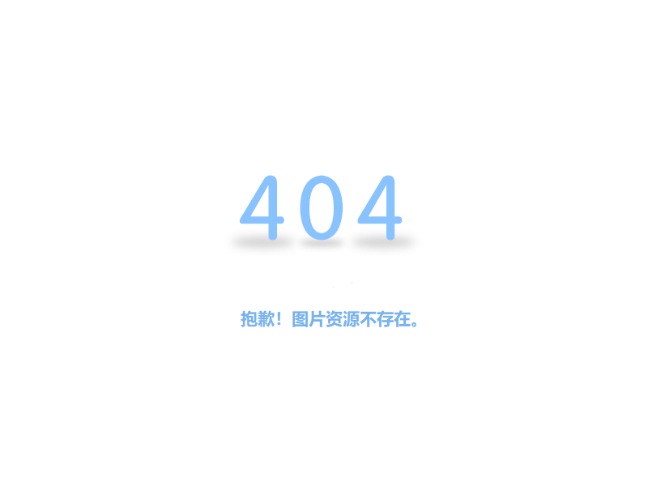

<template>
    <div class="common_pic_panel" id="common_pic_panel">
        <!-- 4.0 ocx -->
        <!-- <object id="regOcxDiv" classid="clsid:455791d4-4095-4f70-b2b3-f5c424f25ad9" width="1" height="1"></object> -->

        <!-- 5.0 ocx -->
        <!-- <object id="regOcxDiv" classid="clsid:8C85B9C1-6B4C-4ECB-9887-2428DA03F77C" width="1" height="1"></object> -->
        <div class="pic_ocx" :if="@is_IE">
            <object id="gxxPlayOcx" classid="clsid:455791d4-4095-4f70-b2b3-f5c424f25ad9" width="100%" height="100%"></object>
        </div>
        <div class="pic_ocx" :if="!@is_IE">
            <embed type="application/npGSVideoPlugin-plugin" name="npGSVideoPlugin" id="npGSVideoPlugin_pic" width="100%"
                height="100%">
        </div>
        <div class="loading_panel" :if="@loading">
            <span class="loading_panel_pic"></span>
        </div>
        
        <div class="common_pic_show" :class="[@playerID]">
            <div class="pic_content" :mouseover="@mouseover" :mouseout="@mouseout">
                <div class="pic_mark">
                    <div class="mark_left"></div>
                    <div class="mark_right"></div>
                    <div class="mark_top"></div>
                    <div class="mark_bottom"></div>
                </div>
                <a href="javascript: void(0);" class="img_panel">
                    
                    <!--  -->
                    <span id="line_left" :mouseup="@line_mouseup"></span>
                    <span id="line_right" :mouseup="@line_mouseup"></span>
                    <span id="line_top" :mouseup="@line_mouseup"></span>
                    <span id="line_bottom" :mouseup="@line_mouseup"></span>
                </a>
            </div>
            <div class="pic_large"></div>
        </div>
        <div class="common_pic_controller">
            <div class="common_pic_controller_btn" id="common_pic_controller_btn">
                <a class="init_btn" id="yt" title="原图" :click="@yt"></a>
                <a class="controller_btn" id="qwm" title="去雾霾" :click="@qwm"></a>
                <a class="controller_btn" id="qqg" title="去强光" :click="@qqg"></a>
                <a class="controller_btn" id="zft" title="对比度增强" :click="@zft"></a>
                <a class="controller_btn" id="gzbc" title="低照度图像增强" :click="@gzbc"></a>
                <a class="controller_btn" id="qz" title="去噪" :click="@qz"></a>
                <a class="controller_btn" id="szqy" title="设置区域" :click="@szqy"></a>
                <a class="controller_btn" id="fd" title="放大" :click="@fd"></a>
                <a class="savefile_btn" id="lcw" title="另存为" :click="@lcw"></a>
                <a class="more_btn" id="moreBtn" title="更多" :click="@moreClick"></a>
                <div class="change_panel">
                    <span class="change_txt"></span>
                    <span class="reduce_btn" :click="@reduce_btn">-</span>
                    <span class="change_num">{{@change_num}}</span>
                    <!-- <input type="text" class="change_num" ms-duplex="@change_num" readonly> -->
                    <span class="add_btn" :click="@add_btn">+</span>
                </div>
            </div>
        </div>

        <!--player弹窗-->
        <div class="player_dialog_panel">
            <ms-dialog :widget="{$innerVm: 'player_pic_dialog', okText: '是', cancelText: @cancelText, className: 'player_pic_dialog_class', show: @player_dialog_show, onCancel: @dialogCancel, onOk:@dialogOk, isMove:true, width: @dialog_width, height: @dialog_height, move_return: @move_return}">
                <div slot="body" ms-skip>
                    <span>{{@close_txt}}</span>
                    <span class="tip-text">
                        <i class="fa fa-info-circle"></i>安装完成后请重启浏览器
                    </span>
                </div>
            </ms-dialog>
        </div>
    </div>
</template>